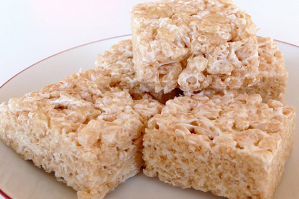

10 minutes
N/A
16
Ingredients
5 tablespoons butter
8 cups, plus 2 cups mini marshmallows
6 cups Krispie Cereal
1/2 tsp salt
Directions
1) Line a 9x9 pan with foil and spray lightly with cooking spray, set aside.
2) In a large post over low heat melt butter. Once butter in melted add in 8 cups mini marshmallows, stirring constantly.
3) Once the marshmallows are just melted remove from heat and stir in your cereal and salt until just coated in marshmallow mixture. Now stir in the remaining 2 cups of mini marshmallows.
4) Pour mixture into prepared pan and press in evenly.
5) Allow to cool completely before cutting into squares. Best if served same day.